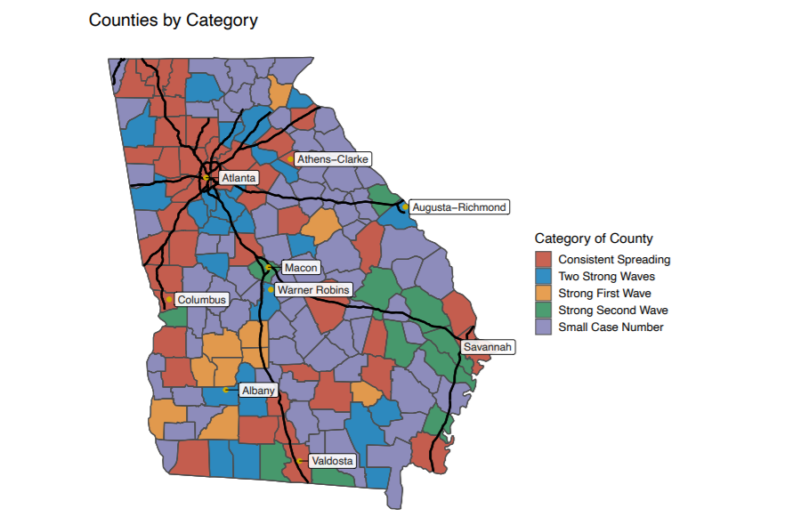
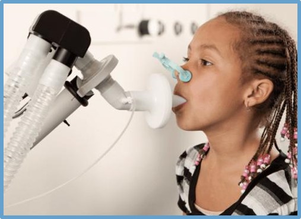

Hi, I'm Holin!
I'm a current graduate student studying in Rollins School of Public Health at Emory University.
I'm passionate about assisting healthcare by using statistical methods and programming languages to analyze clinical data.
I have good commands on epidemiologic methods, data manipulation and statistical computing with strong coding skills in R and SAS.
Most of my projects focus on infectious disease analysis like infectious disease modeling and transmission dynamics study.

An infectious disease surveillance study on estimating the county-level magnitude of infectiousness (eg. time-varied reproductive number) in Georgia from March to July in 2020 by using designed tranmission-based algorithm and maximum likelihood methods to understand spatiotemporal variation of COVID-19 transmission in Georgia.
An infectious disease dynamics study on quantifying the roles of vomiting, diarrhea, and resident vs. staff in norovirus transmission in 107 U.S. nursing home outbreaks and evaluated the intervention effect on each outbreak by using Wallinga-Teunis method, regression analysis and applying stochastic infectious disease model. (ongoing)
A spatial epidemiological study on determining the province-level spatial heterogeneity and dependence of HIV incidence rate in China, 2018 and explored the association between HIV incidence rate and spatial variety of education level and healthcare resources by using the spatial algorithms and analysis tools on disease mapping.

A longitudinal analysis and statistical report on the developmental of pulmonary function in children with asthma and the impact of early intervention of anti-inflammatory drugs by using SAS. Data source was a teaching dataset from the Childhood Asthma Management Program (CAMP) provided by the National, Heart, Lung and Blood Institute.

An infectious disease modeling study on quantifying the infectiousness from asymptomatic COVID-19 cases in Wuhan, China by using sensitivity analysis with the reference of reported case data in Wuhan and building a deterministic compartmental SEIR model with parameters reflecting reality situation of pandemics in Wuhan.
A genetic sequence analysis on calculating the GC contents and CpG deficiencies on multiple coronaviruses (SAR-CoV, SAR-CoV-2, MERS-CoV and 2 two bat derived SARS-like coronaviruses) to see which coronavirus has the most potentially effective mechanism to escape the anti-virus activities on human bodies.